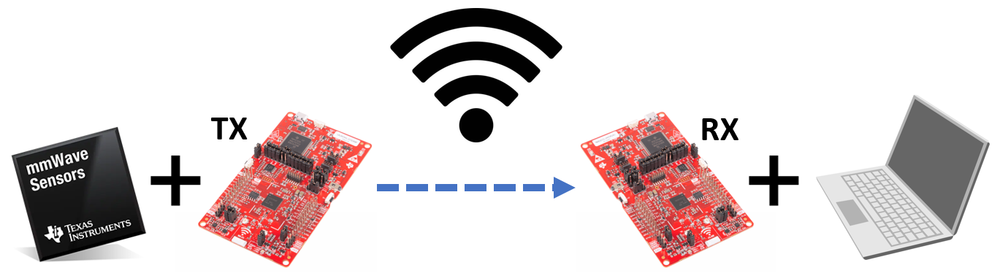

# Overview
In this user guide, steps will be shown to wirelessly setup and send the mmWave sensor module data stream output to a computer.
The People Counting demo will be hard coded (the abbreviation HCC will be used to stand for Hard Coded Configuration) onto the mmWave Radar EVM and a pair of TI SimpleLink Wi-Fi CC3235 LaunchPads will be used to enable wireless communication of the data. One Wi-Fi LaunchPad will be connected to the EVM and the other will be connected to a computer. With this setup, the mmWave Radar EVM + TX Wi-Fi LaunchPad can be remotely located but still transmit data to the People Counting GUI through the RX Wi-FI LaunchPad.
[[y! Note
This user guide example is specifically setup to work with the 3D People Counting Demo and represents one method that can be used as an example to work with other mmWave Radar labs and experiments. ]]

# Wi-Fi Sofware Overview
The demo consists of two binary files one for the TX and one for the RX. On initial power up the TX side with create an Access Point with a pre-defined name for the RX device to connect to and open a TCP server socket to send data over. On the RX Side, the device will attempt to connect to the pre-defined AP, and if successful will then open a TCP socket and complete the connection. From here TX device will send any radar data it receives on the UART pin to connected peer device.
Note: To ensure proper formatting of radar data, the TX side will perform a parsing of the UART data, looking for the header frame of the radar data, calculate length, and then continue to read until empty. If the protocol changes, the data communication might experience issues.
# Quickstart
### Prerequisite
[[y! Go through 3D People Counting Lab and Hard Coded Configuration Users Guide
This user guide assumes users are familiar with the mmWave EVM and Tools. Users should already have ran and familarized themselves with the People Counting Lab and already have the EVM setup for HCC.
]]
## 1. Hardware and Software Requirements
### Hardware
Item | Details
--------------------------|-----------------
TI Wi-Fi LaunchPad | 2x [CC3235SF](https://www.ti.com/tool/LAUNCHXL-CC3235SF).
EVM Device | [IWR6843ISK](http://www.ti.com/tool/IWR6843ISK) or [IWR6843ISK-ODS](http://www.ti.com/tool/IWR6843ISK-ODS) or [IWR6843AOP](http://www.ti.com/tool/IWR6843AOPEVM) with required [Industrial mmWave Carrier Board](http://www.ti.com/tool/MMWAVEICBOOST).
Wires | 2x Female to Male Jumper Wires
### Software
Tool | Version | Download Link
----------------------------|---------------------------|--------
mmWave Industrial Toolbox | Latest | Download and install the toolbox. Go to [Using TI Resource Explorer & the mmWave Industrial Toolbox](../../../../docs/readme.html) for instructions.
SimpleLink CC32xx SDK | 5.20.00.06 | [Link to Latest SimpleLink CC32xx SDK](https://www.ti.com/tool/SIMPLELINK-CC32XX-SDK)
Terminal Emulator | Latest | [TeraTerm](https://ttssh2.osdn.jp/index.html.en) or another terminal emulation software to ensure proper data streaming upon device bootup. The instructions provided in this user guide are based on [TeraTerm](https://ttssh2.osdn.jp/index.html.en)
Uniflash | Latest | Uniflash tool is used for flashing TI mmWave Radar devices. [Download offline tool](http://www.ti.com/tool/UNIFLASH) or use the [Cloud version](https://dev.ti.com/uniflash/#!/)
## 2. Flash the mmWave Radar EVM and Wi-Fi LaunchPads
Flash and configure the mmWave Radar EVM with the People Counting Hard Coded Configuration binary. Please use the following binaries located in the below directory.
Find all the prebuilt binaries for the following steps in the [enclosing directory](../prebuilt_binaries).
`<mmWave Industrial Toolbox Install Path>/labs/People_Counting/WiFi_UART_Transmission/prebuilt_binaries`
Flash and configure the mmWave Radar EVM with the People Counting Hard Coded Configuration binary.
<b>3D People Counting HCC Binary File:</b> 3D_people_count_68xx_demo_hcc.bin
Flash the following binary files to the respective TX and RX Wi-Fi LaunchPad. Ensure the Wi-Fi LaunchPad is configured in the functional mode and flash programming mode as shown below.
<img src="images/cc3235sf_header_layout.png" width="700"/>
<b>TX Binary File:</b> UART_TX_CC3235SF_LAUNCHXL_tirtos_ccs.bin
<b>RX Binary File:</b> UART_RX_CC3235SF_LAUNCHXL_tirtos_ccs.bin
Use the following [User Guide](https://dev.ti.com/tirex/explore/node?node=AH9w8QwBrpt-RLlf.VRAvg__fc2e6sr__LATEST) to see the steps to use UniFlash Image Creator to write the program binary images to the Wi-Fi Launchpad.
## 3. Hardware Setup and Connections
The Industrial mmWave Carrier Board switch setup will need to be reconfigured to utilize the 40 pin header on the back of the board.
The following wired connections will need to be made between the 40 pin header on the back of the Industrial mmWave Carrier Board and the TX Wi-Fi LaunchPad.
The jumper on the TX Wi-Fi LaunchPad located on the RX pin needs to be removed. The red wire is for data communication and the orange wire is for establishing common ground connection between the Industrial mmWave Carrier Board and the TX Wi-Fi LaunchPad.
Connect the orange wire to GND pin and the red wire will be connected to the middle RX terminal indicated by the blue boxes.
<img src="images/wifi_connection_2.png" width="600"/>
On the back of the mmWave Carrier Board, the orange wire is connected to the header pin located on the first row and first column denoted by J6.2 GND. The red wire is connected to the header pin located on the fifth row and second column denoted J6.9 MSSLOGGER.
<img src="images/wifi_connection_1.png" width="600"/>
The RX Wi-Fi LaunchPad will be connected to the computer through a micro usb cable and no modifications or connection changes need to be made.
## 4. Checking Functionality
To check that the setup has been configured correctly, power up and plug in all devices to the computer. The computer USB ports can adequately power the Wi-Fi LaunchPads with the micro USB cable. Go to Device Manager and ensure you know which ports belong to which device.
### A. Checking mmWave Radar EVM HCC
The first step will be to verify the EVM is sending UART Data immediately since it should be configured for HCC. Plug in a micro usb cable from the Industrial mmWave Carrier Board to the computer. Note that the mmWave Radar EVM + mmWave Carrier Board does not normally have to be connected to the computer and this is just for testing.
* Open a TeraTerm Instance and connect it to the DATA UART = XDS110 Class Auxiliary Data Port and set the Speed to 921600.
* Power cycle the EVM by pressing the NRST button. The EVM will immediately begin outputting UART stream data to the terminal instance such as in the image below. This indicates that the mmWave Radar EVM was successfully configured for HCC and you can unplug the micro usb cable from the computer but keep the EVM powered.
<img src="images/teraterm_output_hex.png" width="350"/>
### B. Check TX Wi-Fi LaunchPad
Now we will specifically check the TX Wi-Fi LaunchPad.
Open a Tera Term Instance to check that a correct connection was made. The LaunchPad com ports are configured so that UART data is on the XDS110 Class Application/User UART port. Make sure the serial port connection is corrrectly setup so in the example below connect to (COM25) and have the Speed set to 921600.
Press the reset button on the TX Wi-Fi LaunchPad and the following connection message should appear in Tera Term. Note that the RX Wi-Fi LaunchPad also needs to be connected to the computer to see the below message. Afterwards, you can disconnect the TX Wi-Fi LaunchPad from the computer and power it back up remotely.
### C. Check RX Wi-Fi LaunchPad
To check the RX connection, use a Wi-Fi device such as a cell phone to search for available connections. If the RX Wi-Fi LaunchPad is correctly setup, you will see a Wi-Fi option with the access point name Radar_Wi-Fi_Demo. This is the name coded into the TX and RX project files for a succesful connection to be made.
Next open a Tera Term Instance to check that a correct connection was made. The LaunchPad com ports are configured so that UART data is on the XDS110 Class Application/User UART port. Make sure the serial port connection is corrrectly setup so in the example below connect to (COM25) and have the Speed set to 921600.
Press the reset button on the RX Wi-Fi LaunchPad and the following connection message should appear in Tera Term. If everything is connected correctly, there should be a data stream of characters starting to show up. This indicates correct functionality and succesful data transmission.
{{y
Initially, the data stream will appear as a long series of characters. To view a more coherent data stream, enable [debug mode](https://ttssh2.osdn.jp/manual/4/en/setup/teraterm-term.html) within the TERATERM.ini configuration file and change the output to hex mode. Once debug mode is configured properly, pressing Shift+Esc will enable debug mode and adjust the output to a readable format. Refer to the [Tera Term setup webpage](https://ttssh2.osdn.jp/manual/4/en/setup/teraterm.html) for more information
}}
## 5. Running the mmWave Radar EVM in the GUI
The People Counting Visualizer GUI is compatible with running the HCC example. This GUI can be found here.
`<mmWave Industrial Toolbox Install Path>/labs/People_Counting/Visualizer/mmWave_People_Counting_GUI.exe`
Ensure that you have closed and disconnected all Tera Term Instances before running the GUI.
No other device should be connected to the computer except the RX Wi-Fi LaunchPad. The mmWave Radar EVM and TX Wi-Fi LaunchPad should be remotely powered. Toggle reset on all devices.
Because the RX Wi-Fi LaunchPad uses a different port for data than the radar EVM, make sure to connect to the GUI correctly with the right port numbers.
Press the <i> "Select Configuration" </i> button and load the configuration data for use with the GUI setup. This step does not send the configuration or interact with the EVM and is mainly used to configure GUI settings. Then press the <i>"Start without Send Configuration"</i> button and the GUI will start running.
<img src="images/hcc_visualizer.png" width="500"/>
Now the mmWave Radar EVM + TX Wi-Fi LaunchPad can be setup and powered remotely from the computer + RX Wi-FI LaunchPad for flexible prototyping and analysis.
This concludes the Wi-Fi Communication Setup for 3D People Counting User's Guide.
# Need More Help?
* Search for your issue or post a new question on the <a href="https://e2e.ti.com/support/sensors/f/sensors-forum" target="_blank">mmWave E2E forum</a>